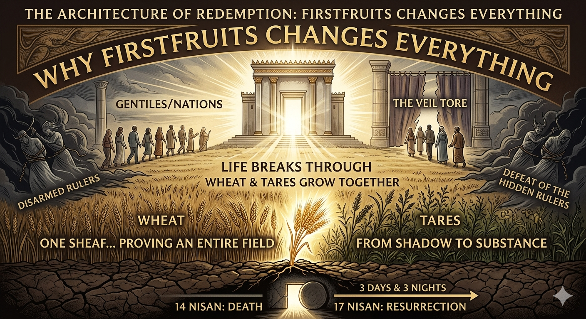

The resurrection was not a random act of divine power, nor did it occur on a whim "sometime that weekend." It was not a floating event detached from the rhythms of the Creator. Instead, it took place on a day that had been rehearsed for generations—a date Israel had observed centuries before the tomb was ever empty. This wasn't divine improvisation; it was the precision of fulfillment.
Everything happened exactly on schedule, aligned perfectly with the Moedim (Appointed Times) of YHWH, following the pattern established by Passover and Unleavened Bread.
“Speak to the children of Israel, and say to them: ‘When you come into the land which I give to you, and reap its harvest, then you shall bring a sheaf of the firstfruits of your harvest to the priest...’”
Leviticus 23:10
This was never merely an agricultural instruction; it was prophecy embedded in time. Year after year, the shadow was acted out until the moment the substance stepped into the light. The biblical calendar wasn't just decorative symbolism—it was a blueprint waiting for its Builder.
Firstfruits marked the moment the very first portion of the harvest was lifted up before YHWH. It didn't signal that the harvest was finished, but that it had officially begun. It was a public declaration that life was breaking through the dirt.
One sheaf... proving the reality of the entire field.
On that exact day, Yeshua rose. Not “around” it or “near” it, but precisely on the appointed time set before the foundations of the cross were laid. Exactly three days and three nights after His death on the 14th of Nisan, as the sun set, He rose on the 17th of Nisan.
“But now Messiah has been raised from the dead, the firstfruits of those who have fallen asleep.”
1 Corinthians 15:20
Paul’s choice of words isn't just poetic; it is technical. Yeshua is identified as Firstfruits, the prototype of a continuing process. This means more than just a return to life—it means the Harvest has started. If there is a “first,” there must, by definition, be a “second” and a “third.” The question is no longer if a harvest will happen, but when it will be gathered.
While the resurrection marks the start of the harvest, it does not mark the immediate clearing of the field. This is the tension we inhabit. Yeshua rises as the first sheaf, yet the world remains a mixture.
The resurrection is the opening move of a process that ends in total alignment: Wheat gathered, tares removed.
The resurrection didn't just conquer “death” in a vague sense; it dismantled specific authorities.
“None of the rulers of this age understood this; for if they had, they would not have crucified the Lord of glory.”
1 Corinthians 2:8
Paul isn't just referencing human politicians; he’s pointing to spiritual principalities. These powers thought the cross was a dead end; they didn't realize it was a trap. By obeying unto death, Yeshua “disarmed” them (Colossians 2:15), stripping them of their authority in the very place they thought they reigned supreme.
When Yeshua said, “Destroy this temple, and in three days I will raise it up,” He shifted the definition of “dwelling.” The Temple was where Heaven met Earth. By rising, Yeshua became the indestructible Dwelling Place—a Temple not made with hands.
At that moment, the veil tore. This wasn't YHWH discarding His instructions; it was YHWH removing the barrier.
The direction of history has shifted. Before the resurrection, everything pointed forward in anticipation. Now, everything flows outward in application.
The empty tomb is the proof that the ground has been broken open and cannot be shut. The “first sheaf” guarantees the rest of the crop. This is why the enemy's defeat is absolute—they inadvertently triggered the very mechanism that ensures their eviction.
The biblical sequence is unmistakable:
We are now in the “counting” period—the time of growth, pressure, and maturation. The resurrection isn't just a historical fact to acknowledge; it is a current reality to embody. We are the field. And as any farmer knows, what is hidden in the soil will eventually be revealed by its fruit.
The harvest is already underway.
The resurrection of Yeshua as Firstfruits inaugurated the new creation harvest. From the wave sheaf to the empty tomb, the appointed times of YHWH stand unshaken. We live between the first sheaf and the final ingathering — but the victory is sealed. The field belongs to the Lord of the Harvest.